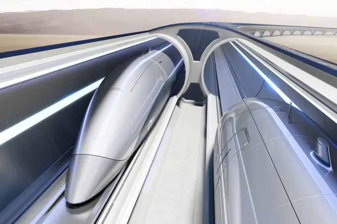
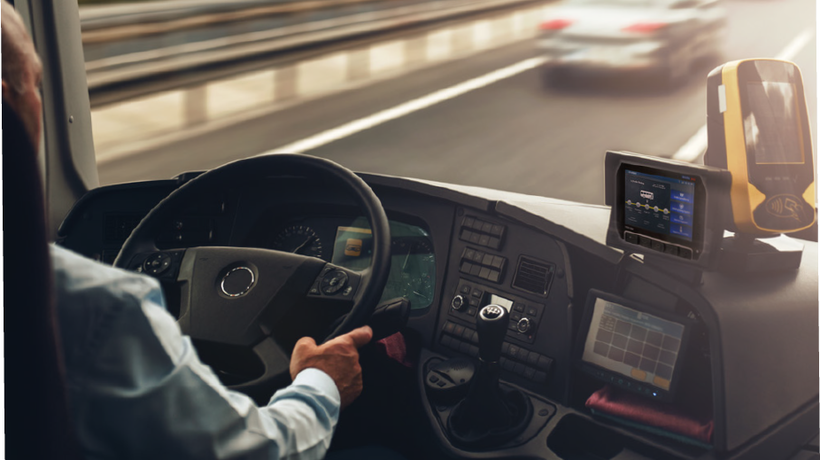
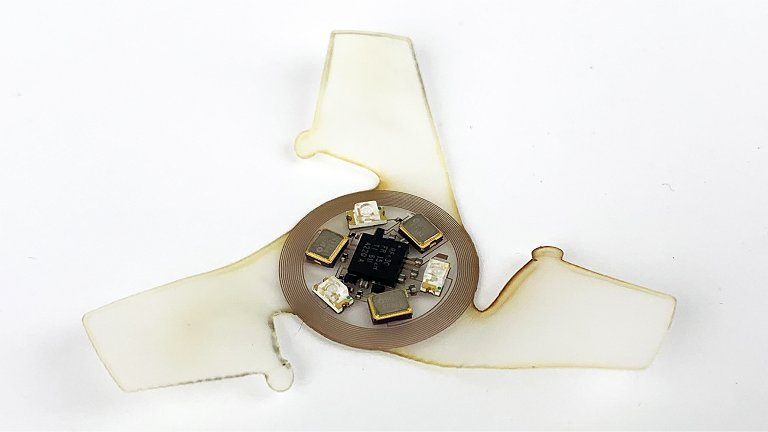
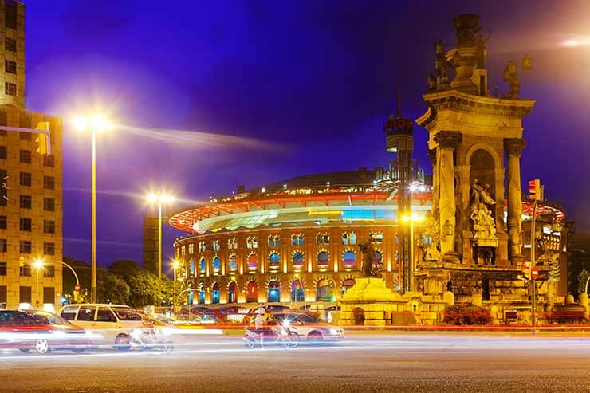
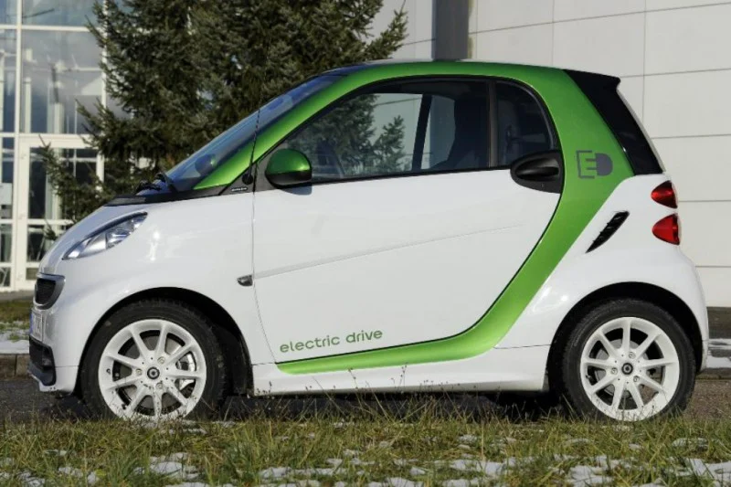
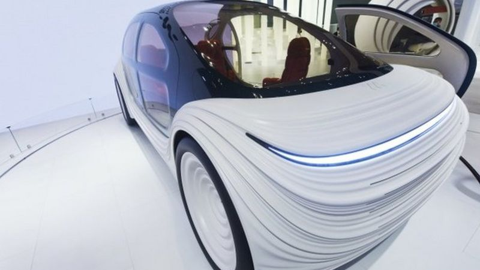
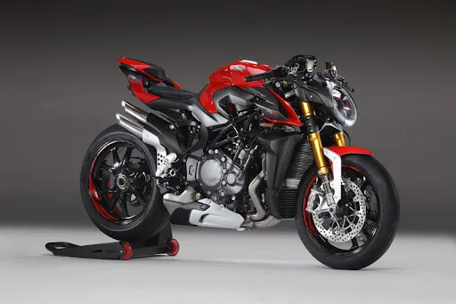

Transportes Futurísticos
Os novos transportes futurísticos que existem ou estão sendo criados, pensados, é algo que o mundo sempre esperou, jeitos mais rápidos de se locomover, acessibilidade, segurança, praticidade, transportes elétricos e automáticos, e tudo isso está mais próximo. Os seguintes tópicos serão focados em transportes em massa ou urbanos. (Flávio e Matheus E.)
Hyperloop
Em 2013, o bilionário empreendedor Elon Musk idealizou o conceito do Hyperloop, um sistema de transporte de alta velocidade capaz de mudar a forma como viajamos entre cidades. Além de encurtar o tempo do transporte de massa por terra, a novidade também ajudaria na redução dos danos ambientais causados pelos combustíveis usados atualmente.
Basicamente, o Hyperloop é um sistema de transporte que funciona em uma espécie de cápsula de alumínio que circula dentro de tubos pneumáticos e pode atingir a marca dos 1.200 km/h, sendo considerado o transporte mais rápido do mundo. Para ilustrar melhor a ideia, pense no desenho animado "Os Jetsons", onde os personagens usavam tubos a vácuo para se mover em torno dos prédios. É mais ou menos isso, só que em uma escala muito maior: a ideia inicial foi fazer uma viagem de São Francisco a Los Angeles – praticamente uma viagem entre São Paulo (SP) e Blumenau (SC) – em cerca de meia hora. O sistema será abastecido por energia renovável e ainda será capaz de gerar um excedente de energia solar, eólica e cinética que poderá ser vendido para a rede pública, por exemplo, para tornar o serviço mais lucrativo. Em suma, o Hyperloop permitirá que viagens de longa distância sejam efetuadas de maneira mais rápida, mais segura, mais barata, imune ao clima e mais sustentável do que aviões, carros ou trens.
Ônibus inteligente
Os veículos autônomos aos poucos estão se tornando realidade, eles vêm sendo apresentados e testados em diversos lugares do mundo. Uma cidade na Suíça está testando um ônibus sem motorista e 100% elétrico que busca passageiros em casa. O ônibus, que pode trafegar a uma velocidade de até 30 km/h, possui câmeras e sensores que detectam pedestres e outros veículos. Seus criadores dizem que o objetivo não é substituir os ônibus normais.
Microveículos
O monociclo elétrico, o patinete elétrico e o hoverboard, também chamado de skate elétrico, podem ser citados como uma prova de que alternativas estão sendo acrescentadas à essa matriz de transportes, já que estão sendo muito utilizados nas grandes cidades. Patinetes elétricos são a última moda em cidades da Califórnia e do resto do mundo - incluindo São Paulo. Arielle Smith, uma estudante da Universidade do Sul da Califórnia, em Los Angeles, diz que o patinete dobrável "mudou completamente a minha vida ... é muito mais conveniente. Economizo muito tempo indo de casa para a aula e não fico toda suada!"
Velo-city
Seria ótimo ir de bicicleta para o trabalho todos os dias, mas também seria um grande esforço. Um que em breve pode ficar um pouco mais fácil. Em 2006, a cidade de Toronto revelou planos para um sistema de trânsito de alta velocidade, ultrassilencioso e livre de poluição: uma ciclovia projetada pelo arquiteto Chris Hardwicke. A ideia era construir um tubo com três faixas elevadas para bicicletas e separadas por direção, permitindo uma circulação de ar que criaria um vento de cauda. A eficiência dos ciclistas poderia ser melhorada em até 90%, e eles poderiam atingir velocidades de 50 quilômetros por hora. Velo-city, como o projeto é chamado, também seria ideal para climas frios, já que os ciclistas seriam protegidos dos elementos como chuva e vento. Embora a ideia tenha sido aclamada quando foi proposta pela primeira vez, o projeto foi arquivado por falta de financiamento. Apesar disso, não foi esquecido. Talvez teremos bicicletas voando confortavelmente acima de nossas cabeças em um futuro próximo.
Benefícios e Transportes (Esdras)
A tecnologia para meios de transporte já representa um marco para o futuro da mobilidade, visto que traz benefícios significativos tanto para usuários quanto para empresas.
Com um número cada vez maior de pessoas tendo acesso às redes móveis e smartphones, era mesmo uma questão de tempo para que a tecnologia também trabalhasse a nosso favor no quesito mobilidade urbana.
Dentre os benefícios da tecnologia para os meios de transporte, podemos falar: garantir a eficiência de malhas tão complexas, reduzir custos e gerar renda, o investimento em soluções como Big Data, Internet das Coisas (IoT), Cloud Computing, Machine Learning e apps de tecnologia móvel têm conseguido impulsionar a transformação digital na mobilidade urbana em todos os cantos do mundo.
Esse tópico tem como objetivo no projeto abordar os benefícios que esses avanços tem no transporte, no que irá nos ajudar no cotidiano, nas empresas, na mobilidade, entre outras coisas.
Esses avanços estão longe da década? (Dário)
Não estão, Mas também não podemos esperar resultados instantâneos pois se considerarmos o aprimoramento constante das tecnologias modernas devemos esperar mudanças radicais nos meios de transporte, Um dos pontos principais é que sabemos onde queremos chegar, mas ainda não sabemos como chegar lá. À medida que a população global cresce e mais pessoas moram em centros urbanos aumenta também a necessidade de pensar sobre como nos deslocamos e como tornar os nossos transportes mais eficientes, Uma certeza que já possuímos é a de que o transporte urbano do futuro dependerá cada vez menos do petróleo e mais da eletricidade, não só pela preocupação com a emissão de poluentes mas também pelas mudanças climáticas globais fazendo uso do desenvolvimento de tecnologias baseadas em sistemas eletrônicos.
Mas não vamos nos iludir. Arun Srinivasan, da Bosch, diz que veículos totalmente autônomos - sejam carros ou ônibus - vão demorar pelo menos 10 anos para tomarem as ruas de fato. A infinidade de sensores de que carros sem motoristas precisam para monitorar o ambiente à sua volta ainda não são confiáveis o bastante, especialmente durante o mau tempo, admite ele.
Dificuldades (Renato)
Embora a tecnologia venha avançado cada vez mais, ainda existem muitos bloqueios no caminho para os transportes futuristas, como o tempo que levaria para desenvolver tais transportes, a falta de investimento na área e a abundância de países subdesenvolvidos e em desenvolvimento por todo o mundo.
Logo de cara, veículos de transporte não seriam acessíveis para os mais necessitados, onde somente classes economicamente superiores desfrutariam do serviço. A falta de investimentos resultaria no aumento das taxas desses transportes, trazendo preços altíssimos.
Um cenário onde todos usufruem desses novos transportes, ainda é muito utópico principalmente quando estamos falando de veículos autônomos, A infinidade de sensores de que esses carros sem motoristas precisam para monitorar o ambiente à sua volta ainda não são confiáveis o bastante. Seria muito caro incluir todos os dispositivos de segurança necessários para se algum dos mecanismos falhar. "Apenas alguns carros de marca premium poderiam ter sensores mais seguros e melhores", diz Srinivasan.
Além disso, há todas as questões práticas em torno de quem detém os dados que esses veículos geram e quem é responsável no caso de um acidente. Isso sem falar no público, que precisa ser persuadido sobre esse novo horizonte de locomoção. Mas a visão de um sistema de transporte totalmente integrado, sustentável e eficiente está gradualmente se concretizando. Em breve, poderemos viver em um mundo onde o carro será apenas uma das muitas maneiras de nos deslocarmos.